About Us
نبذة عن بعض منتجاتنا
زيت كبد الحوت
زيت الخروع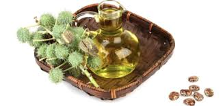
زيت الزيتون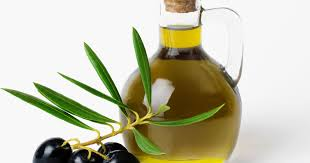
المغات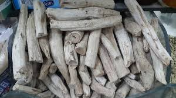
التيليو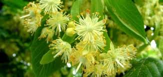
الشيح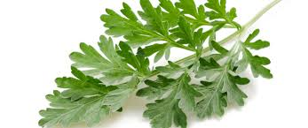
لبان الدكر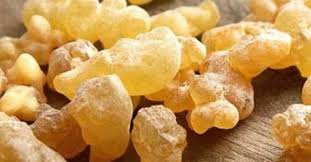
البابونج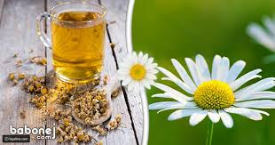
ورق الجوافة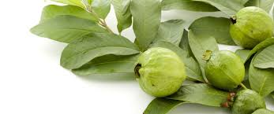
الزعتر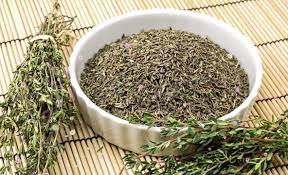
مارمارية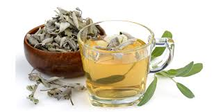
الحلبة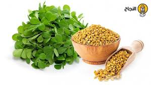
الحنضل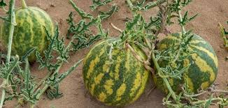
يمكن تناول شاي الزعفران للحصول على فوائد نبات الزعفران؛ حيث يُعدّ شاي الزعفران مصدراً غنيّاً بالفيتامينات، والمعادن، ومضادات الأكسدة، ويمكن أن يوفّر بعض الفوائد الصحية التي تم ذكرها سابقاً، ويمكن تحضيره عن طريق نقع خيوط الزعفران في الماء الساخن وأشهر فوائد الزعفران التي قد يسوّقها مشجعين تناوله خلال الحمل تشمل: المساعدة على الهضم الذي عادة ما يكون بطيء خلال الحمل... يساعد على تهدئة حموضة المعدة. و تحسين المزاج. وخفض ضغط الدم.
تحتوى معلقة صغيرة من القرنفل المطحون على نسبة عالية من الحديد و الماغنسيوم و الفسفور و الكلسيوم و الفيتامينات و عند اضافته الى الحليب يقوم بعلاج العقم و الضعف الجنسى و ضعف القلب و المعدة و الكبد و الطحال و الكلى و الام المفاصل و ضعف الذاكرة و سوء الفهم و الضعف العام و الخمول و ضعف اللثة و الاسنان والامها
تحتوي بذور الشمر على كميات كبيرة من الألياف، التي تُساعد على تخفيف الإمساك، وغيره من المشاكل الهضميّة التي قد تُسبّب الغازات، كما تحافظ على الحركة الصحيحة في القناة الهضميّة، بالإضافة إلى أنَّها تساعد في بعض الحالات على التخفيف من الإسهال المائي، ممّا يُساعد على التقليل من حركة الأمعاء الرخوة، كما يُعدُّ الشمر النيء مصدراً جيداً للألياف، وتعادل الكمية الموصى بها من الألياف ما يتراوح بين 25 إلى 30 غراماً يوميا يرتبط استهلاك بذور الشمر بالتقليل أعراض التهاب القولون؛ العديد من مرضى التهاب القولون المزمن قد قلّت لديهم الأعراض بعد تناولهم لمزيجٍ من الأعشاب يحتوي على الشمر، كما خفّت الآلام في الأمعاء الغليظة لديهم بعد 15 يوماً من استهلاك الشمّر
يمكن تناول شاي الزعفران للحصول على فوائد نبات الزعفران؛ حيث يُعدّ شاي الزعفران مصدراً غنيّاً بالفيتامينات، والمعادن، ومضادات الأكسدة، ويمكن أن يوفّر بعض الفوائد الصحية التي تم ذكرها سابقاً، ويمكن تحضيره عن طريق نقع خيوط الزعفران في الماء الساخن وأشهر فوائد الزعفران التي قد يسوّقها مشجعين تناوله خلال الحمل تشمل: المساعدة على الهضم الذي عادة ما يكون بطيء خلال الحمل... يساعد على تهدئة حموضة المعدة. و تحسين المزاج. وخفض ضغط الدم.
فوائد شرب النعناع على الريق يهتم الكثير من الأشخاص بالتعرف على فوائد شرب النعناع على الريق حيث أنه يحتوي على الكثير من العناصر الطبيعية والفيتامينات والمعادن مثل الكالسيوم وفيتامين دال الهامة لصحة الإنسان بشكل عام النعناع يعد النعناع من الأعشاب الطبيعية المشهورة كثيرًا في جميع بلدان العالم ويتم استعماله منذ قديم الزمن في العلاج بالطب البديل للتخلص من الأمراض التي يمكن أن تصيب جسم الإنسان بشكل عام. كما أنه يعد أحد العناصر الهامة التي يتم إضافتها للكثير من أطباق الطعام وخاصة بعض أنواع السلطات مما يعطيها نكهة رائعة ورائحة طيبة كثيرًا.
بداية اختيارنا للمنتجات ان لم يكن جميع الاختيارات .. فغالبا معظمه بناء على طلب العملاء و حمدا لله اننا قادرون على توفير كل احتياجات عملاؤنا.. و حفاظا على صحة العميل نتجنب تماما اى مواد صناعية او مواد حافظة فى منتجاتنا و دائما نتشرف بتقديم الجديد و المناسب و نتشرف ايضا بعمل شىء يشبه التقييم لمستوى خدمتنا و ذلك حرصا منا على التمييز و التفوق و الحفاظ على اعلى مستوى خدكه و اعلى درجات ارضاء العملاء و لذلك...نوفر دائما كل المنتجات بحيث نحافظ على ان يكون كل متطلبات العميل متوفرة ولا يحتاج ابدا للذهاب لمكان اخر لتكملة احتياجاته .. وفى ظل هذه المنظومه نحرص دائما على افضل الاسعار و افضل العروض باستمرار وتشمل منتاجاتنا الزيوت و العطور و العطارة و الحبوب ونحرص جدا جدا على نظافة و جةدة المنتجات .. حتى اذا تعامل معنا العميل يعود الينا بنفس راضية و سعيدة
انظر للاسفل يوجد افضل منتجات الشعر
انظر للاسفل يوجد افضل منتجات البشرة
اشتري شامبو وبلسم لعلاج الشعر بعد البروتين او الكيراتين 1000. وضع بلسم treseme keratine smooth لترطيب الشعر وتعزيز نعومته وإذا كنت تنوين استعمال أداة حرارية لتصفيف الشعر يتم استعمال بخاخ شامبو تريسمي للشعر المعالج بالبروتين قبل تصفيف الشعر لحمايته من التقصيف و التلف و السقوط
تكون الشعر من البروتين على هيئة سلاسل فمن الممكن أن تكون مفرودة أو لولبية حيث يعمل كريم الفرد على كسر روابط هذه السلاسل ومن ثم فرده بشكل صحي جدا، وأغلب كريمات الفرد المتوفرة في الأسواق تحتوي على مادة الصودا كاوية والفورمالدهيد وهو مواد حارقة تسبب أضرار بالغة بالشعر وفروة الرأس وهو ما يجب الابتعاد عنها واختيار أنواع صحية من كريمات الفرد متل KERASTASE.
تشكّل قشرة الشعر هي حالة يتم فيها تكوين رقائق جلدية بيضاء صغيرة من فروة الرأس, و غالباً ما تكون هذه الرقائق مصحوبة بالحكّة. أما بالنسبة للسبب المحدد لتكون قشرة الرأس فهو غير معروف للآن ولا علاقة لها بقلّة النظافة الشخصية. الا ان الدراسات أوجدت عوامل كثيرة تزيد من حالة تشكل قشرة الرأس مثل قلة غسل الشعر أو تمشيط الشعر بكثرة لذلك ننصح ب منتج AXUNIL
أفضل منتجات العناية بالشعر التالف الشعر هو تاج كل أنثى ودليل جمالها، لذا فالاهتمام به لا يعد رفاهية أو خيار يمكن الاستغناء عنه، خاصة مع كثرة التعرض لعوامل التلف كتقلبات الطقس، واستخدام الحرارة المباشرة والصبغات، بالإضافة إلى أهمية استخدام منتجات العناية بالشعر المختلفة، للحفاظ على شعرك صحيًّا ولامعًا، ولهذا خصصنا لكِ هذا المقال لتتعرفي على أفضل منتجات العناية بالشعر التالف، للحصول على نتائج رائعة ومتألقة دائمًا
. يمكن أن يؤدّي تناول غذاء صحي والحفاظ على نسبة الماء بالجسم إلى نمو الشعر ليكون كثيفًا ولامعًا، ويعد ذلك فائدة إضافية إن كنتِ تحاولين إطالة شعرك. Pjur للمساعدة على تطويل الشعر بسرعة اشربي 8 أكواب من الماء يوميًا. تجنّبي السوائل التي تؤدّي إلى الجفاف. الموجود في الفواكه والخضراوات والمكسرات لأن هذا الفيتامين يساعد على زيادة كثافة الشعر وقوّته. تناولي اللحوم، والأسماك، والبقوليات، والخضراوات الداكنة. تناولي السلمون، وزيت الزيتون،
معظم الاناث يبحثن عن اللمعا للشعر و يتكلفن الكثير بسبب ذلك و احيانا يقومن باستخدام منتجات و غالبا المواد الكيمائية الداخلة فى تصنيع هذه المنتجات تؤدى الى اثار عكسية او على القلقة الى اثار جانبية اضا تؤذى فروة الراس و احيانا بقمن بوصفات شعبية موروثة عن الاجداد و وقتها ايضا تكون النتائج غير مرضية .. ولكن نحن ابتكرنامنتج طبيعى 100% من الاعشاب الطبيعية و الزيوت الطبيعية و لا يؤثر بالسلب فى اى حال من الاحوال .. لذلك ننصح باستخدام SUAVE
سيروم فيتامين سي أو مصل فيتامين ج تشمل الأتي: 1. آمن لأغلب أنواع البشرة. 2. يرطب البشرة. 3. يعمل على تفتيح البشرة. 4. يقلل من احمرار البشرة ويساعد على توحيد لونها. 5. يخفف من ظهور الهالات السوداء. 6. يحفز الكولاجين الطبيعي وإنتاجه في الجسم. 7. قد يحد من ترهل البشرة. 8. قد يخفف من آثار حروق الشمس. 9. يحفز التئام الجروح بشكل عام كماانه مستحضر العناية أو خلاصة اسيدات الفاكهة وفاعليته تتلخص بغناه بالمواد الأساسية التي تمد البشرة بالنضارة والحيوية والشباب المتجدد
إن اتباع روتين صحي للبشرة، يؤدي لعدم ظهور الرؤوس السوداء والحصول على بشرة نظيفة، يتمثل هذا الروتين فى استخدام منتج كريم ديفرين بعد تحديد نوع بشرتك اولا ، وهي الخطوة الأولى والأهم في العناية بالبشرة. استخدام الغسول المناسب بناءا على نوع البشرة. استخدام المرطب الطبي الخالي من العطور. استخدام قابض للمسام (التونر). استخدام واق للشمس.
كريمات العناية بالبشرة العادية لا تؤثر في مثل تلك العيوب، فتلجأ العديد من السيدات لاستعمال كريمات تفتيح البشرة. لذلك، دعينا نقدم لكِ أفضل الخيارات المتاحة حاليًا من كريمات تفتيح البشرة، التي قد أثبتت فعاليتها في التخلص من البقع، النمش وأثار الندبات. كما توفر أيضًا معامل حماية من الشمس، وليست فقط لتفتيح البشرة.
الكلف العميق ، أحد أنواع الكلف ، ويظهر في صورة اسمرار مع تبديل لون البشرة الطبيعي للون أكثر اسمرارًا ، وتظهر أيضًا على البشرة بقع غير منتظمة الشكل ولها حدود واضحة ، وتكون بأحجام صغيرة وكبيرة ومتوسطة ، وتتكون نتيجة لإفراز الخلايا لصبغة الميلانين بكميات كبيرة ، مما يتسبب في ارتفاع هرمون البروجسترون ، وهرمون الأستروجين ، وتتركز هذه البقع في منطقة الأنف والخدين وفوق الشفاه العليا ، وعلى الجبهة والرقبة ، وهو من المشاكل التي تضر بجمال ونضارة البشرة .
وهي أزهار تنمو على أشجار الماغنوليا التي تُعتبر من أشجار الزينة، وتمتاز ببتلاتها البيضاء النقية التي تنمو إلى جانب أوراقها المُفعمة باللون الأخضر، ويعُد الموطن الأصلي لهذه الزهرة جنوب شرق الولايات المُتحدة الأمريكية، وأصبحت مُنتشرة في العديد من بلدان العالم نظراً لقدرتها الكبيرة على التكيُف السريع، ويوجد العديد من الأنواع المُختلفة لهذه الزهرة، والتي تختلف بحجمها وطولها
مع تقدم السن يبدأ ظهور التجاعيد و الخطوط الرفيعة على الوجه و الرقبة و حول العين و ذلك بسبب نقص إنتاج مادة الكولاجين و حمض الهيالورنيك المسئولان عن شد الجلد و تجديد خلايا البشرة و نضارتها و إشراقها لذا ينصح الأطباء بعد سن 35 بإستخدام كريمات علاج الجاعيد لتحفز البشرة على زيادة إنتاج الكولاجين و حمض الهيالورنيك لتجنب ظهور التجاعيد وعلامات تقدم السن. و سنوضح لكم فى هذه المقالة أفضل كريم للتجاعيد وشد البشرة